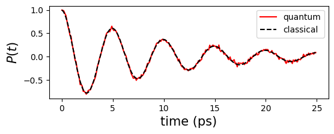

Tutorial on Simulating Open Quantum System Dynamics
Here, we present the general procedure for simulating open quantum system dynamics using qflux.
What is an Open Quantum System?
An open system represents a system that interacts with its surrounding environment, and these interactions fundamentally affect the dynamics of the system. Due to the presence of the environment, the system’s evolution can no longer be described by the Schrödinger equation. For instance, while the Schrödinger equation describes unitary evolution with conserved system energy, open systems exhibit energy exchange with the environment, which can lead to gradual energy dissipation.
Due to the large number of degrees of freedom in the environment, it is generally impractical to directly solve the Schrödinger equation for the combined system and environment. As a result, many equations of motion have been developed to describe the dynamics of open quantum systems under various approximations. One of the most popular forms of a trace-preserving evolution equation is the Lindblad master equation, given by
In this equation, here \(\rho(t)\) is the reduced density matrix of the system, and \(H\) represents the Hamiltonian of the system. The jump operators \(L_n\) represent the environmental effects on the dynamics, with the rates \(\gamma_n\) quantifying these effects.
The purpose of this tutorial is to demonstrate how to solve the Lindblad equation described above using qflux, both on classical and quantum computing platforms. To that end, we first introduce the general procedure for solving the equation, and then illustrate it with a spin-1/2 example to familiarize the reader with the basic usage of qflux.
To numerically solve the Lindblad equation, qflux adopts a matrix–vector multiplication approach. This method leverages commonly used Python packages such as NumPy and SciPy, and consists of three main steps:
- vectorizing the density matrix,
- converting the Lindblad equation into a matrix–vector form
- integrating the resulting equation to obtain the time evolution of the system.
(i) Vectorizing the density matrix:
The density matrix \(\rho(t)\) of a system with an N-dimensional Hilbert space is an \(N\times N\) matrix. For numerical purposes, it is reshaped into a vector of dimension \(N^2\).
Here the superscript "\(\top\)" represents a transpose operation. This is equivalent to working in Liouville space, where operators are represented as vectors and superoperators act as matrices.
(ii) Converting the Lindblad equation into a matrix–vector form
The Lindblad equation can be recast into the equivalent matrix-vector form:
Where the effective Hamiltonian is \(H_{\mathrm{eff}} = H_C + i H_D\), with \(H_C\) and \(H_D\) representing the \(N^2 \times N^2\) matrix forms of the commutator and the Lindbladian dissipator, respectively:
Here, \(L^*_{n}\) is the complex conjugate of \(L_{n}\) and \(\mathbb{I}\) is the identity matrix in the Hilbert space of the Hamiltonian \(H\).
(iii) Integrating the Lindblad equation
The density matrix at time \(t\) can be expressed as the action of the exponential of the matrix \(-i H_{\mathrm{eff}}\) on the vectorized density matrix at \(t=0\),
where \(\mathbf{G}(t)\) is called the propagator, and is defined as \(\mathbf{G}(t)=e^{-i H_{\mathrm{eff}}t}\).
Solve the Lindblad equation
As a reminder, the task at hand is compute the time evolution of the density matrix according to the Lindblad equation:
To do this, we must:
-
Define the initial state \(| \nu_{\rho}(0)\rangle\)
-
Define the propagator \(\mathbf{G}(t)\) describing the time-evolution.
-
Define a propagation time-step and the number of time steps for which we want to compute the evolved density matrix.
We now describe in detail how to solve the Lindblad equation using the DynamicsOS class from the qflux.open_systems module.
Definition of the Initial State
The initial state is the vectorized density matrix \(| \nu_{\rho}(0)\rangle\). However, the DynamicsOS class in qflux.open_system automatically performs the vectorization, so the user only needs to define the initial density matrix \(\rho(0)\) as an \(N\times N\) array and pass it to the DynamicsOS class.
As an example, consider a single spin-1/2 system. We define the spin-up and spin-down states as
This Hilbert space dimension of spin-1/2 is 2, so the initial density matrix \(\rho(0)\) is a \(2\times 2\) array. If the system is initially in the spin-up state, then
This can be defined in Python as:
import numpy as np
# Initial density matrix
spin_up = np.array([1.0, 0.0], dtype=np.float64)
spin_down = np.array([0.0, 1.0], dtype=np.float64)
rho0_1spin = np.outer(spin_up, spin_up.conj())
Definition of the propagator
The propagator \(\mathbf{G}(t)\) is defined as \(\mathbf{G}(t)=e^{-i H_{\mathrm{eff}}t}\). Where the effective Hamiltonian is \(H_{\mathrm{eff}} = H_C + i H_D\), with
Given the system Hamiltonian \(H\), the jump operators \(L_n\), and their corresponding rates \(\gamma_n\), the propagator \(\mathbf{G}(t)\) is fully specified.
The computation of \(\mathbf{G}(t)\) is encapsulated within the Gt_matrix_expo function of the DynamicsOS class. The user only needs to provide \(H\), \(L_n\), and \(\gamma_n\) during the initialization of the DynamicsOS class.
Continuing with the spin-1/2 system as an example, we define the Hamiltonian as
where \(\sigma^z\) and \(\sigma^x\) are Pauli matrices.
X = np.array([[0, 1], [1, 0]], dtype=np.complex128)
Y = np.array([[0, -1j], [1j, 0]], dtype=np.complex128)
Z = np.array([[1, 0], [0, -1]], dtype=np.complex128)
E0 = 0.0
Delta = 0.1 * np.pi * 2
# The Spin-1/2 system Hamiltonian
H_1spin = E0*Z + Delta*X
Here we set \(E_0 = 0\), \(∆ = 0.1 \times 2π\). In qflux, the jump operator \(L_n\) and the damping rate \(\gamma_n\) are combined into a collapse operator, defined as
\(C_n = \sqrt{\gamma_n}L_n\). This collapse operator is then passed to the DynamicsOS. For example, if only a single jump operator exist with \(L = \sigma^x\) and \(\gamma=0.05\), we have:
# The jump operator and damping rate of Spin-1/2 system
gamma_1spin = 0.05
L_1spin = np.sqrt(gamma_1spin)*X
With these definitions in place, the DynamicsOS class can be initialized as follows:
from qflux.open_systems.numerical_methods import DynamicsOS
spin1_dissipative = DynamicsOS(Nsys=2, Hsys=H_1spin, rho0=rho0_1spin, c_ops = [L_1spin])
Note that the c_ops argument in DynamicsOS is a list. For example, setting c_ops = [L_1spin] specifies that the Lindblad equation involves only a single collapse operator L_1spin. If multiple collapse operators are present, they can be simulated by simply including all of them in the list.
If no collapse operators are specified, c_ops defaults to an empty list. In this case, the code will still run, corresponding to the solution of the Liouville–von Neumann equation for a closed system (i.e., unitary evolution without environmental effects).
Define Simulation Time and Run the Dynamics
Given a time array for the simulation, the propagate_matrix_exp method in the DynamicsOS class computes the time evolution operator \(\mathbf{G}(t)\), and subsequently solves the Lindblad equation to obtain the density matrix \(\rho(t)\). If an observable is specified, the method also returns the time-dependent expectation values of that observable.
time_arr = np.linspace(0, (250 - 1) * 0.1, 250)
#matrix exponential propagation
result_matrix_exp = spin1_dissipative.propagate_matrix_exp(time_arr=time_arr, observable=Z, Is_store_state=True, Is_Gt = True)
After execution, result_matrix_exp is an object that contains the following information evaluated at each time in time_arr:
-
A list of expectation values of the observable
-
A list of density matrices (if
Is_store_state=True), and -
A list of propagators (if
Is_Gt=True).
Note that in most cases, only the observable is of interest. Therefore, both Is_store_state and Is_Gt are set to False by default.
qflux also provides an interface to the mesolve function from QuTiP as an alternative method for propagating the Lindblad equation, which facilitates direct comparison between different approaches. It is integrated into the propagate_qt method of the DynamicsOS class.
Quantum Simulation of the Lindblad Equation
Using the QubitDynamicsOS class from the qflux.open_systems.quantum_simulation module, qflux enables quantum simulation of the Lindblad equation. The procedure closely parallels the classical simulation workflow: first, define the initial state, system Hamiltonian, and collapse operators, and then instantiate a QubitDynamicsOS object accordingly.
from qflux.open_systems.quantum_simulation import QubitDynamicsOS
spin1_quantum = QubitDynamicsOS(rep='Density', Nsys=2, Hsys=H_1spin, rho0=rho0_1spin, c_ops = [L_1spin])
The QubitDynamicsOS class in qflux performs quantum simulation of the Lindblad equation using Qiskit backends and interfaces. It provides a simplified interface for executing quantum simulations via Qiskit.
By default, the backend is set to Qiskit Aer's AerSimulator. The parameter rep can be either 'Density' or 'Kraus', which determines how the density matrix is encoded into a quantum state vector. In this tutorial, we use the default option 'Density', which corresponds to vectorizing the density matrix.
Since open system dynamics are intrinsically non-unitary, and quantum circuits are built from unitary gates, a dilation approach is employed to represent non-unitary propagators within an enlarged Hilbert space using extra qubits. Various dilation methods have been developed, and the default method used here is 'Sz-Nagy'.
For more detailed explanations of these parameters, please refer to the source code documentation.
In quantum simulation, the final measurement requires specifying the target basis states. For a spin-1/2 system, the \(2\times 2\) density matrix \(\rho(t)\) is encoded into two qubits. With one additional qubit used for dilation, a total of three qubits are involved.
Here, we measure the quantum states \(|000\rangle\) and \(|011\rangle\), which correspond to extracting the populations \(\langle 0|\rho|0\rangle\) and \(\langle 1|\rho|1\rangle\), respectively.
Once the time array time_arr is defined, the method qc_simulation_vecdens can be used to perform the quantum simulation.
#set qubit state to measurement
spin1_quantum.set_count_str(['000','011'])
#run the quantum simulation
Pop_qc = spin1_quantum.qc_simulation_vecdens(time_arr)
One can verify that the quantum simulation results are consistent with the corresponding classical results.
import matplotlib.pyplot as plt
plt.figure(figsize=(6,2))
plt.plot(time_arr,Pop_qc[:,0]-Pop_qc[:,1],'r-',label="quantum")
plt.plot(time_arr,result_matrix_exp.expect,'k--',label="classical")
plt.xlabel('time (ps)',fontsize=15)
plt.ylabel('$P(t)$',fontsize=15)
plt.legend(fontsize=10)

One can also visualize an example quantum circuit from the result output of the qc_simulation_vecdens method (here, we use the circuit at the 100th time step as an example):
The circuit complexity can be further illustrated by transpiling it into a specific basis gate set. Here, we adopt the basis gates used for the ibm_kingston backend: